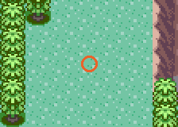
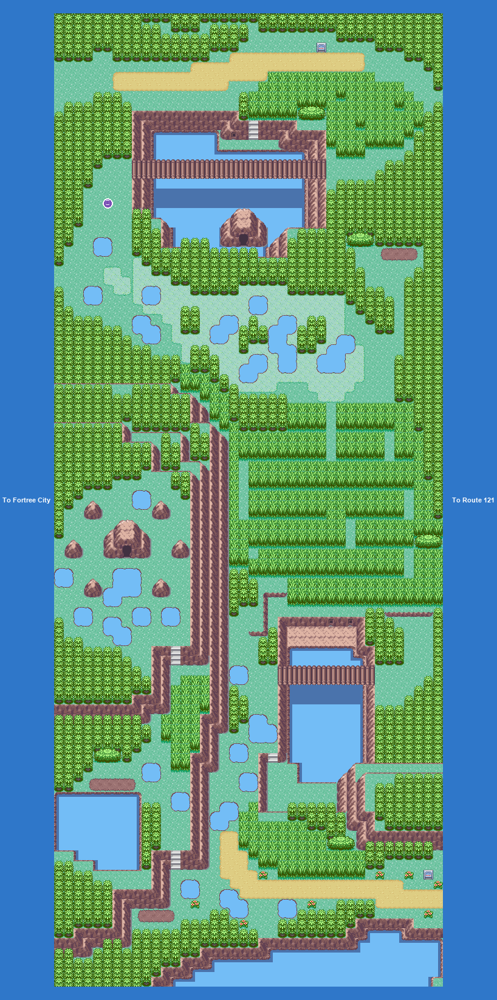

PokémonEMMA'S EMERALD
OFFICIAL Strategy Guide
Miraidon

Miraidon
Level 70 · ElectricDragon
Where: Route 120
Unlock: Champion (after the Hall of Fame)
Where: Route 120
Unlock: Champion (after the Hall of Fame)

How to get it
No event and no puzzle. It stands in the open at the ★ on the map: walk up, face it and press A to battle.
Catch it and it is gone for good. Knock it out or run and it is back the next time you enter the map.
Walkthrough step 51: Route 120. Reached from: Ancient Tomb, Scorched Slab, Fortree City, Route 121.

267